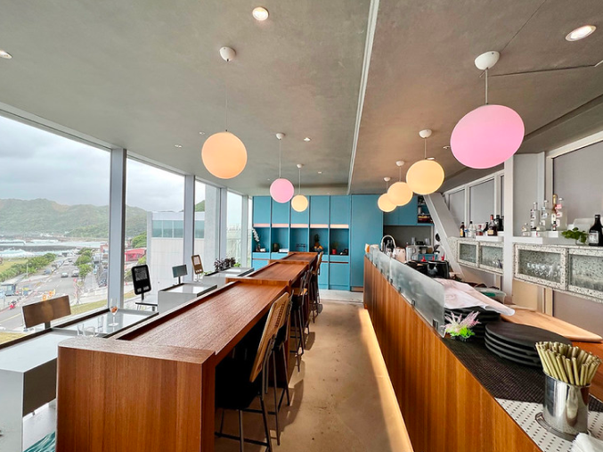
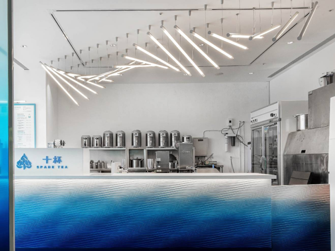
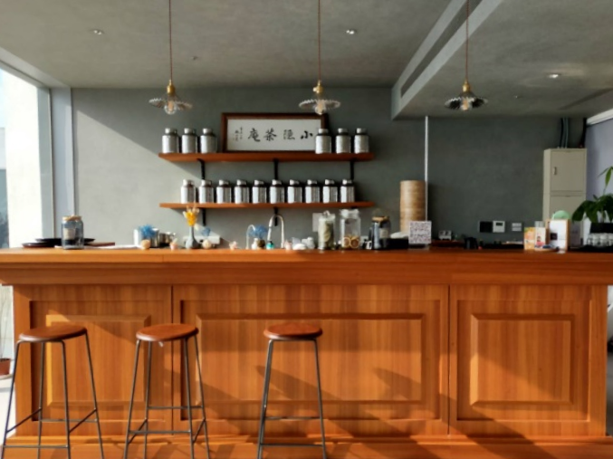
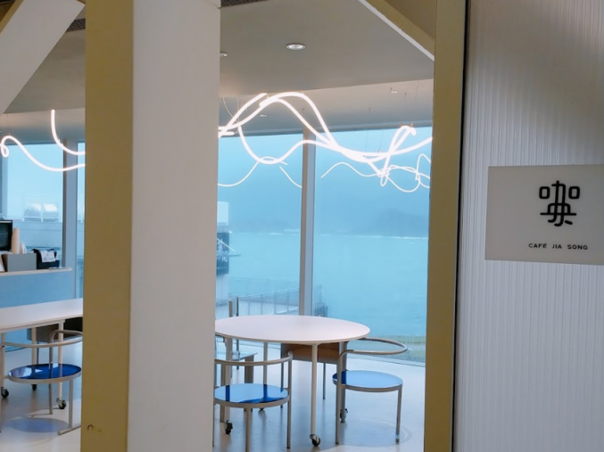

空橋

潮境智能海洋館位於八斗子潮境公園旁，原為海洋科技博物館附設之潮境海洋研究中心，為國內重要的海洋研究及教育機構，坐落於基隆八斗子原垃圾掩埋場復育完成的潮境半島公園，主體建築分為南棟、空橋、北棟及工作站。
在同時保留部分研究辦公機能原則下，將館內研究空間轉化成具有水族觀賞以及數位多媒體互動展示內容之博物場館以及附屬商業設施，並開放給大眾參觀。
-

海有個地方
I OCEAN -

十杯
Spade Tea -

小隱茶庵
-

咖央潮境店
Cafejiasong

海有個地方
I OCEAN
位於八斗子潮境智能海洋館三大懸浮咖啡廳的中堅，空橋走廊正中間的海有個地方 Anather Place ，用海洋、永續及在地的概念設計出許多耳目一新的飲品，有許多的經典飲品頗受網友喜愛，更多文人墨客喜愛它獨特地風格。
尤其獨特風景視覺在雨天及颱風天，特有的觀浪潮讓許多造訪的遊客，增添莫名的小確幸，在懸浮閣樓上遙望整個海間的獨特浪潮，一幕幕一整排延綿數百米的浪花，是北海岸風景一絕。

十杯
Spade Tea
牧場直送純淨鮮乳x百年茶莊嚴選茶葉，不計成本的絕妙茶奶比例，成就一杯最天然好喝 ......店的客人都是我們最誠摯對待的好朋友，我們製作的每一杯飲品，都只為了給你最用心的體驗！十杯原創的招牌牧奶茶——嚴選茶葉與牧場直送鮮乳相遇的好滋味！

小隱茶庵
小隱也是個適合沈浸自己欣賞不同角度事務的空間，泡茶與下午茶不能錯過，推薦三五好友能坐下來，這麼風雅的喝茶，一聊就是一下午，瓶瓶罐罐的茶樣本，能嗅聞感受台灣茶、草本複方茶與各種茶器具的質感搭配，日系茶屋的風格可以深入其境與世隔絕，像是進入到另一個小天地，吃著傳統的糕餅、涼糕、貢糖、蕨餅，融入在地傳統風味等著你…
